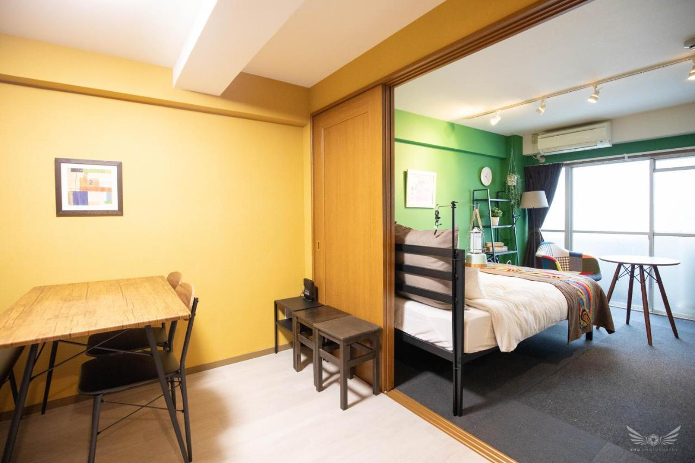

When is the best time to go to Japan?

This is an example image with some details.Most people tend to plan their trip during the much-anticipated cherry blossom season in Japan. It’s a beautiful time, but it’s also when Japan tends to get the most crowded and expensive.
I landed up in Japan in early March 2018 and stayed exactly a month. Although Honshu, the main island home to Tokyo and Kyoto, was quite chilly, I enjoyed the quiet shoulder season. And I got a chance to catch the Ume – plum blossom – almost as beautiful as the cherry blossom yet somehow more introspective. I then headed south to Kyushu Island, which was warmer, with many offbeat places to explore.
Cherry blossom time in Japan
Cherry Blossom Festival
My plan was to leave just before the cherry blossom began in Japan. But as luck (and climate change) would have it, the cherry trees bloomed early that year!
One of my most important Japan travel tips – even if you’re travelling to Japan for the first time – is don’t be hell bent on seeing the cherry blossom. Nature won’t time itself according to our dates. And Tokyo, Kyoto and Osaka are seriously crowded during that time. There is so much more to Japan that I highly recommend visiting in late winter, autumn or early summer.
where to stay in Japan

old Hakata townhouse in Fukuoka.
Airbnb, my favorite go-to platform for unique accommodations, is complicated in Japan. After a government crackdown, only places with a tourism license are allowed to rent on Airbnb. And only for 180 days of the year. This might make sense in tackling overtourism in places like Kyoto, but is a lost opportunity for the less-explored countryside villages.
Anyway, travelling to Japan for the first time, I relied mostly on booking.com and direct google search to find traditional ryokans, small B&BS, guesthouses, hostel pods and homestays.
Important Japan travel tip: Most accommodations allow check-in only after 4 pm and expect check-out by 10 am. This is to allow for their rigorous cleaning schedule!